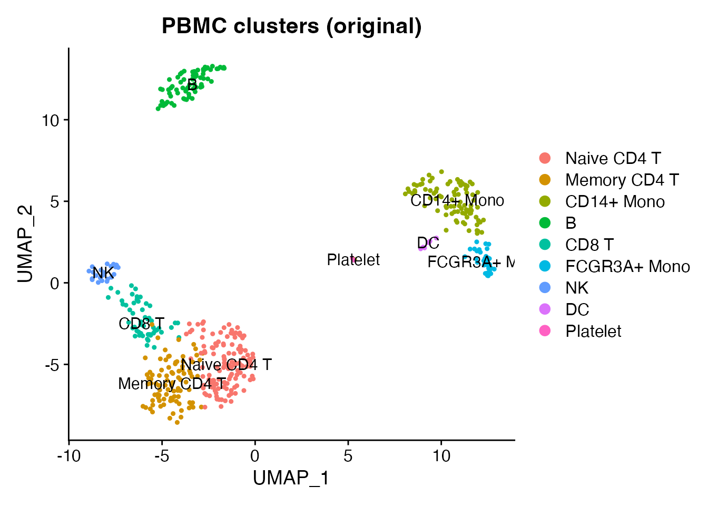
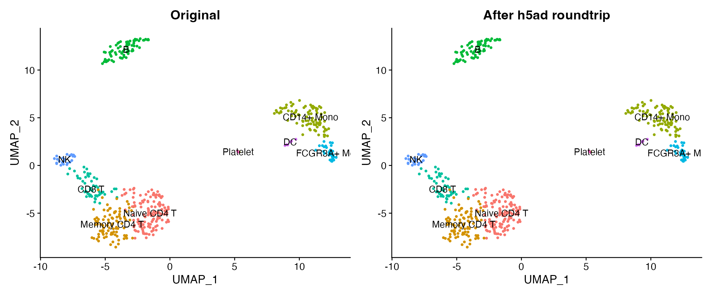

Introduction
Single-cell ATAC-seq measures chromatin accessibility at single-cell resolution. The core data structure is a peak-by-cell count matrix – structurally identical to a gene-by-cell RNA matrix. scConvert converts this matrix along with cell metadata, embeddings, and cluster labels between formats, enabling interoperability between R (Seurat/Signac) and Python (scanpy/episcanpy) workflows.
This vignette demonstrates the h5ad roundtrip using the shipped PBMC demo data as a stand-in. The matrix structure and conversion mechanics are the same regardless of whether rows represent genes or peaks.
Load demo data
obj <- readRDS(system.file("extdata", "pbmc_demo.rds", package = "scConvert"))
cat("Cells:", ncol(obj), "\n")
#> Cells: 500
cat("Features:", nrow(obj), "\n")
#> Features: 2000
cat("Reductions:", paste(Reductions(obj), collapse = ", "), "\n")
#> Reductions: pca, umap
cat("Metadata columns:", paste(colnames(obj[[]]), collapse = ", "), "\n")
#> Metadata columns: orig.ident, nCount_RNA, nFeature_RNA, seurat_annotations, percent.mt, RNA_snn_res.0.5, seurat_clusters
DimPlot(obj, group.by = "seurat_annotations", label = TRUE, pt.size = 0.8) +
ggtitle("PBMC clusters (original)")
Roundtrip through h5ad
Write the Seurat object to h5ad and read it back.
h5ad_path <- file.path(tempdir(), "pbmc_atac_demo.h5ad")
writeH5AD(obj, h5ad_path, overwrite = TRUE)
cat("Wrote:", basename(h5ad_path), "\n")
#> Wrote: pbmc_atac_demo.h5ad
cat("File size:", round(file.size(h5ad_path) / 1024^2, 1), "MB\n")
#> File size: 0.9 MB
loaded <- readH5AD(h5ad_path)
cat("Loaded:", ncol(loaded), "cells x", nrow(loaded), "features\n")
#> Loaded: 500 cells x 2000 featuresVerify preservation
Dimensions and barcodes
cat("Cells match:", ncol(obj) == ncol(loaded), "\n")
#> Cells match: TRUE
cat("Features match:", nrow(obj) == nrow(loaded), "\n")
#> Features match: TRUE
orig_cells <- sort(colnames(obj))
rt_cells <- sort(colnames(loaded))
cat("Barcodes identical:", identical(orig_cells, rt_cells), "\n")
#> Barcodes identical: TRUE
orig_features <- sort(rownames(obj))
rt_features <- sort(rownames(loaded))
cat("Feature names identical:", identical(orig_features, rt_features), "\n")
#> Feature names identical: TRUECount matrix
common_cells <- intersect(colnames(obj), colnames(loaded))
common_feats <- intersect(rownames(obj), rownames(loaded))
orig_vals <- as.numeric(GetAssayData(obj, layer = "counts")[
head(common_feats, 200), head(common_cells, 200)])
rt_vals <- as.numeric(GetAssayData(loaded, layer = "counts")[
head(common_feats, 200), head(common_cells, 200)])
cat("Count values identical:", identical(orig_vals, rt_vals), "\n")
#> Count values identical: TRUEMetadata
shared_cols <- intersect(colnames(obj[[]]), colnames(loaded[[]]))
cat("Metadata columns preserved:", length(shared_cols), "/", ncol(obj[[]]), "\n")
#> Metadata columns preserved: 7 / 7
cat("Columns:", paste(shared_cols, collapse = ", "), "\n")
#> Columns: orig.ident, nCount_RNA, nFeature_RNA, seurat_annotations, percent.mt, RNA_snn_res.0.5, seurat_clusters
if ("seurat_annotations" %in% shared_cols) {
orig_ann <- as.character(obj$seurat_annotations[common_cells])
rt_ann <- as.character(loaded$seurat_annotations[common_cells])
cat("Cell annotations match:", identical(orig_ann, rt_ann), "\n")
}
#> Cell annotations match: TRUEEmbeddings
cat("Original reductions:", paste(Reductions(obj), collapse = ", "), "\n")
#> Original reductions: pca, umap
cat("Loaded reductions:", paste(Reductions(loaded), collapse = ", "), "\n")
#> Loaded reductions: pca, umap
if ("umap" %in% Reductions(loaded)) {
orig_umap <- Embeddings(obj, "umap")[common_cells, ]
rt_umap <- Embeddings(loaded, "umap")[common_cells, ]
max_diff <- max(abs(orig_umap - rt_umap))
cat("UMAP max absolute difference:", max_diff, "\n")
}
#> UMAP max absolute difference: 0Compare plots
library(patchwork)
p1 <- DimPlot(obj, group.by = "seurat_annotations", label = TRUE, pt.size = 0.8) +
ggtitle("Original") + NoLegend()
p2 <- DimPlot(loaded, group.by = "seurat_annotations", label = TRUE, pt.size = 0.8) +
ggtitle("After h5ad roundtrip") + NoLegend()
p1 + p2
What is preserved vs. what needs separate handling
For real scATAC-seq data, scConvert preserves the core data but some Signac-specific components require separate handling:
Preserved by scConvert
| Component | Seurat/Signac | h5ad |
|---|---|---|
| Peak count matrix |
counts layer |
X |
| Cell metadata | meta.data |
obs |
| Peak metadata | meta.features |
var |
| LSI/PCA embeddings | reductions |
obsm |
| UMAP coordinates | reductions$umap |
obsm['X_umap'] |
| Cluster labels | meta.data$seurat_clusters |
obs['seurat_clusters'] |
Needs separate handling
| Component | Why | Workaround |
|---|---|---|
| Fragment files | Large tabix files, not part of h5ad | Copy fragments.tsv.gz + .tbi
separately |
| Gene annotations | GRanges object (R-specific) | Reload from EnsDb after import |
| Motif matrices | Signac-specific slot | Recompute with AddMotifs()
|
| ChromatinAssay class | R S4 class, not in h5ad | Upgrade with CreateChromatinAssay()
|
Upgrading to ChromatinAssay (if Signac is available)
After loading an h5ad file containing peak data, you can upgrade the
standard Seurat assay to a Signac ChromatinAssay for
peak-aware analyses.
library(Signac)
# Load h5ad containing peak-by-cell matrix
atac <- readH5AD("peaks.h5ad")
# Upgrade to ChromatinAssay
peak_counts <- GetAssayData(atac, layer = "counts")
atac[["peaks"]] <- CreateChromatinAssay(
counts = peak_counts,
sep = c("-", "-"),
min.cells = 0,
min.features = 0
)
# Re-attach annotations if needed
# library(EnsDb.Hsapiens.v86)
# Annotation(atac) <- GetGRangesFromEnsDb(ensdb = EnsDb.Hsapiens.v86)
# Fragments(atac) <- CreateFragmentObject("fragments.tsv.gz")Python interoperability
The exported h5ad is directly readable by scanpy or episcanpy.
# Requires Python: pip install scanpy
import scanpy as sc
adata = sc.read_h5ad("peaks.h5ad")
print(adata)
print(f"Peak names: {list(adata.var_names[:5])}")
# Standard scanpy pipeline works on peak matrices
sc.pp.normalize_total(adata)
sc.pp.log1p(adata)
sc.pp.pca(adata)
sc.pp.neighbors(adata)
sc.tl.umap(adata)
sc.pl.umap(adata, color="seurat_clusters")Clean up
unlink(h5ad_path)Session Info
sessionInfo()
#> R version 4.5.2 (2025-10-31)
#> Platform: aarch64-apple-darwin20
#> Running under: macOS Tahoe 26.3
#>
#> Matrix products: default
#> BLAS: /System/Library/Frameworks/Accelerate.framework/Versions/A/Frameworks/vecLib.framework/Versions/A/libBLAS.dylib
#> LAPACK: /Library/Frameworks/R.framework/Versions/4.5-arm64/Resources/lib/libRlapack.dylib; LAPACK version 3.12.1
#>
#> locale:
#> [1] en_US.UTF-8/en_US.UTF-8/en_US.UTF-8/C/en_US.UTF-8/en_US.UTF-8
#>
#> time zone: America/Indiana/Indianapolis
#> tzcode source: internal
#>
#> attached base packages:
#> [1] stats graphics grDevices utils datasets methods base
#>
#> other attached packages:
#> [1] patchwork_1.3.2 ggplot2_4.0.2 Seurat_5.4.0 SeuratObject_5.3.0
#> [5] sp_2.2-1 scConvert_0.1.0
#>
#> loaded via a namespace (and not attached):
#> [1] RColorBrewer_1.1-3 jsonlite_2.0.0 magrittr_2.0.4
#> [4] spatstat.utils_3.2-2 farver_2.1.2 rmarkdown_2.30
#> [7] fs_1.6.7 ragg_1.5.0 vctrs_0.7.1
#> [10] ROCR_1.0-12 spatstat.explore_3.7-0 htmltools_0.5.9
#> [13] sass_0.4.10 sctransform_0.4.3 parallelly_1.46.1
#> [16] KernSmooth_2.23-26 bslib_0.10.0 htmlwidgets_1.6.4
#> [19] desc_1.4.3 ica_1.0-3 plyr_1.8.9
#> [22] plotly_4.12.0 zoo_1.8-15 cachem_1.1.0
#> [25] igraph_2.2.2 mime_0.13 lifecycle_1.0.5
#> [28] pkgconfig_2.0.3 Matrix_1.7-4 R6_2.6.1
#> [31] fastmap_1.2.0 MatrixGenerics_1.22.0 fitdistrplus_1.2-6
#> [34] future_1.69.0 shiny_1.13.0 digest_0.6.39
#> [37] S4Vectors_0.48.0 tensor_1.5.1 RSpectra_0.16-2
#> [40] irlba_2.3.7 GenomicRanges_1.62.1 textshaping_1.0.4
#> [43] labeling_0.4.3 progressr_0.18.0 spatstat.sparse_3.1-0
#> [46] httr_1.4.8 polyclip_1.10-7 abind_1.4-8
#> [49] compiler_4.5.2 bit64_4.6.0-1 withr_3.0.2
#> [52] S7_0.2.1 fastDummies_1.7.5 MASS_7.3-65
#> [55] tools_4.5.2 lmtest_0.9-40 otel_0.2.0
#> [58] httpuv_1.6.16 future.apply_1.20.2 goftest_1.2-3
#> [61] glue_1.8.0 nlme_3.1-168 promises_1.5.0
#> [64] grid_4.5.2 Rtsne_0.17 cluster_2.1.8.2
#> [67] reshape2_1.4.5 generics_0.1.4 hdf5r_1.3.12
#> [70] gtable_0.3.6 spatstat.data_3.1-9 tidyr_1.3.2
#> [73] data.table_1.18.2.1 XVector_0.50.0 BiocGenerics_0.56.0
#> [76] BPCells_0.2.0 spatstat.geom_3.7-0 RcppAnnoy_0.0.23
#> [79] ggrepel_0.9.7 RANN_2.6.2 pillar_1.11.1
#> [82] stringr_1.6.0 spam_2.11-3 RcppHNSW_0.6.0
#> [85] later_1.4.8 splines_4.5.2 dplyr_1.2.0
#> [88] lattice_0.22-9 survival_3.8-6 bit_4.6.0
#> [91] deldir_2.0-4 tidyselect_1.2.1 miniUI_0.1.2
#> [94] pbapply_1.7-4 knitr_1.51 gridExtra_2.3
#> [97] Seqinfo_1.0.0 IRanges_2.44.0 scattermore_1.2
#> [100] stats4_4.5.2 xfun_0.56 matrixStats_1.5.0
#> [103] UCSC.utils_1.6.1 stringi_1.8.7 lazyeval_0.2.2
#> [106] yaml_2.3.12 evaluate_1.0.5 codetools_0.2-20
#> [109] tibble_3.3.1 cli_3.6.5 uwot_0.2.4
#> [112] xtable_1.8-8 reticulate_1.45.0 systemfonts_1.3.1
#> [115] jquerylib_0.1.4 GenomeInfoDb_1.46.2 dichromat_2.0-0.1
#> [118] Rcpp_1.1.1 globals_0.19.1 spatstat.random_3.4-4
#> [121] png_0.1-8 spatstat.univar_3.1-6 parallel_4.5.2
#> [124] pkgdown_2.2.0 dotCall64_1.2 listenv_0.10.1
#> [127] viridisLite_0.4.3 scales_1.4.0 ggridges_0.5.7
#> [130] purrr_1.2.1 crayon_1.5.3 rlang_1.1.7
#> [133] cowplot_1.2.0